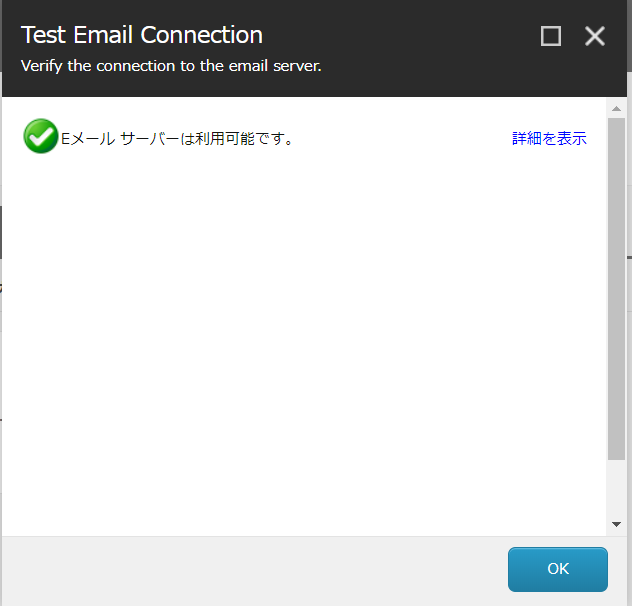

3.3. Email Experience Manager¶
3.3.1. Custom SMTP の設定¶
Sitecore の Email Experience Manager に関しては、月間のメール利用料を基にした契約をすることで、メールの配信ができるサービスとなります。デモで利用する場合は、 Custom SMTP を利用することで、デモを実施することができます。手順に関しては以下のページが参考になります。
ここでは、web.config の項目を確認してください。以下のように CustomeSMTP になっていれば、web.config の設定は問題ありません。
<add key="eds:define" value="CustomSMTP" />
Sitecore でメールを利用するためには、通常は Email Experience Manager のサービスを契約することで対応できますが、デモや検証にあたっては CustomSMTP を使う形となります。ここでは、CustomSMTP の場合のメールサービスの設定を紹介しています。
3.3.1.1. Sitecore.config の設定¶
App_Config のフォルダにある Sitecore.config の設定を変更します。今回は Outlook.com のメールアドレス、サーバーの設定で紹介をしていますが、実際に利用するサーバーが別にある場合は、そのサーバーの値に合わせて設定をしてください。
設定 |
値 |
|---|---|
MailServer |
smtp.office365.com |
MailServerUserName |
メールアドレス |
MailServerPassword |
パスワード |
MailServerPort |
587 |
MailServerUseSsl |
true |
設定は以下の通りとなります。
<!-- MAIL SERVER
SMTP server used for sending mails by the Sitecore server
Is used by MainUtil.SendMail()
Default value: ""
-->
<setting name="MailServer" value="smtp.office365.com" />
<!-- MAIL SERVER USER
If the SMTP server requires login, enter the user name in this setting
-->
<setting name="MailServerUserName" value="メールアドレス" />
<!-- MAIL SERVER PASSWORD
If the SMTP server requires login, enter the password in this setting
-->
<setting name="MailServerPassword" value="パスワード" />
<!-- MAIL SERVER PORT
If the SMTP server requires a custom port number, enter the value in this setting.
The default value is: 25
-->
<setting name="MailServerPort" value="587" />
<!-- MAIL SERVER SSL
If the SMTP server requires SSL, set the value to true.
The default value is: false
-->
<setting name="MailServerUseSsl" value="true" />
3.3.2. CustomSMTP の設定¶
App_ConfigSitecoreEmailExperience のフォルダにある Sitecore.EDS.Providers.CustomSMTP.config および Sitecore.EDS.Providers.CustomSMTP.Sync.config のファイルの編集をします。
3.3.2.1. Sitecore.EDS.Providers.CustomSMTP.config¶
まずは SMTP サーバーとの接続に関しての設定をします。項目としては以下のとおりです。
設定 |
値 |
|---|---|
server |
smtp.office365.com |
port |
587 |
userName |
メールアドレス | |
password |
パスワード |
authenticationMethod |
Login |
startTls |
true |
proxySettings |
exm/eds/proxySettings |
サンプルのコードは以下のとおりです。
<smtpSettings type="Sitecore.EDS.Core.Net.Smtp.SmtpSettings, Sitecore.EDS.Core" singleInstance="true">
<server>smtp.office365.com</server>
<port>587</port>
<userName>メールアドレス</userName>
<password>パスワード</password>
<authenticationMethod>Login</authenticationMethod>
<startTls>true</startTls>
<proxySettings ref="exm/eds/proxySettings" />
</smtpSettings>
3.3.2.2. Sitecore.EDS.Providers.CustomSMTP.Sync.config¶
続いて POP サーバーとの接続に関しての設定をします。項目としては以下のとおりです。
設定 |
値 |
|---|---|
server |
outlook.office365.com |
port |
995 |
userName |
メールアドレス | |
password |
パスワード |
useSsl |
true |
startTls |
true |
proxySettings |
exm/eds/proxySettings |
サンプルのコードは以下のとおりです。
<pop3Settings>
<pop3Setting type="Sitecore.EDS.Core.Net.Pop3.Pop3Settings, Sitecore.EDS.Core" singleInstance="true">
<server>outlook.office365.com</server>
<port>995</port>
<userName>メールアドレス</userName>
<password>パスワード</password>
<useSsl>true</useSsl>
<startTls>true</startTls>
<proxySettings ref="exm/eds/proxySettings"/>
</pop3Setting>
</pop3Settings>
これで設定が完了しました。念のため、iisreset を実行してアプリケーションを再起動してください。
3.3.3. 接続テスト¶
サーバーとの接続テストを実施するために、管理画面にアクセスをして、コンテンツエディターを開いてください。左側のコンテンツツリーに表示されている、 Sitecore - コンテンツ - 電子メールアドレス のアイテムを選択します。
アイテムを選択すると、メニューに 電子メール のタブが追加され、テスト接続 のアイコンが表示されます。これをクリックしてください。
テスト結果として、Eメールサーバーは利用可能です、と表示されることで、メールサーバーとの接続を確認することができました。
{kind=link}
接続ができない場合は、いくつかの要因があります。
多要素認証を組み合わせてメールを利用している
SMTP での接続を許可していない
メールツールでの接続を許可していない
メールサーバーのセキュリティによって、利用できない場合があります。サーバーの管理者に確認をして、設定をしてください。
テストが完了すれば、実際にメールを送ることが可能となります。